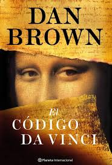
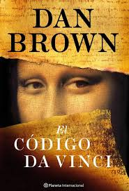

Título: Por los bosques
Autor: Lluís Vergés
El periodista y escritor Lluís Vergés propone en este ensayo un paseo por el mundo de los árboles y las florestas en compañía de algunos personajes que a lo largo de la historia han destacado por su amor a los grandes vegetales. Científicos, pensadores, pintores y escritores como Charles Darwin, Vicent Van Gogh, Federico García Lorca, Henry Thoreau o Patrick Leigh Fermor recorren estas páginas llenas de vida y curiosidades. Todos ellos nos enseñan que los árboles son nuestros grandes amigos y los salvadores de nuestra civilización: enriquecen nuestra vida con su madera y sus frutos, modelan nuestros paisajes, atraen la lluvia, refrescan las ciudades, favorecen nuestra salud y captura el CO2 del aire para liberar oxígeno a la atmósfera


 
